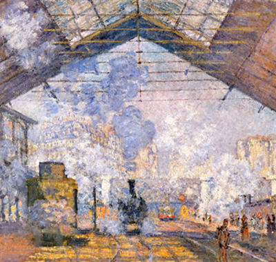

Renaissance et Baroque (XVe – XVIIe siècle) Un âge d’or où l’art mêle science, foi et émotion dramatique. Une période marquée par la redécouverte de l’Antiquité, le souci du réalisme, la lumière dramatique et les thèmes religieux ou mythologiques.Peintres notables : Léonard de Vinci, Michel-Ange, Raphaël, Caravage, Rembrandt, Véronèse,Rubens, Le Bernin (Baroque, principalement sculpteur mais influent dans l’esthétique)

Impressionnisme La lumière, le mouvement, l’instant suspendu. Né en France, ce mouvement capture la lumière, le mouvement, la vie moderne et la nature en touches légères et couleurs vives.Peintres notables:
Claude Monet, Pierre-Auguste Renoir, Edgar Degas, Camille Pissarro
Berthe Morisot, Alfred Sisley, Gustave Caillebotte
Post-impressionnisme L’émotion prend le pas sur la réalité. La couleur devient langage. Une évolution de l’impressionnisme, avec plus d'expression personnelle, de symbolisme, et des couleurs plus audacieuses.Peintres notables :
Vincent van Gogh, Paul Cézanne, Paul Gauguin, Henri Toulouse-Lautrec,
Émile Bernard, Georges Seurat (pointillisme, transition post-impressionniste)
Classiques intemporels Des œuvres hors du temps, ancrées dans la mémoire collective. Des œuvres emblématiques qui ont transcendé leur temps, toujours célébrées pour leur beauté, leur mystère ou leur innovation.Peintres notables :
Johannes Vermeer, Sandro Botticelli, Francisco Goya, Diego Velázquez,
Jean-Auguste-Dominique Ingres, Léonard de Vinci, Albrecht Dürer